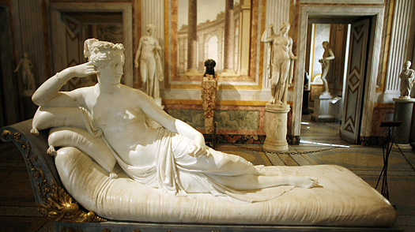
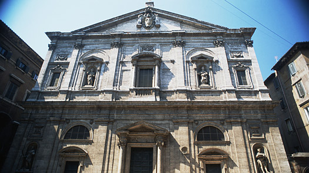
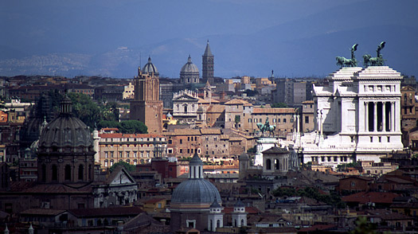
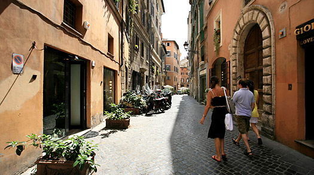
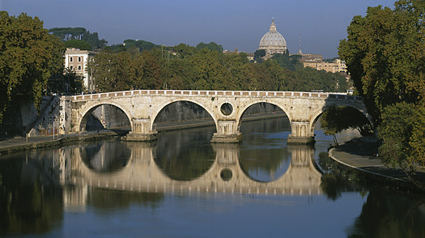

Rome is a popular travel destination in Italy full of attractions.
Today's Rome, Roma, is a vibrant and lively city with reminders of its past everywhere.
You'll encounter ancient Roman sites, medieval and Renaissance buildings and fountains, great museums,
and beautiful squares. The city is a living museum of history from Roman times to present.
It also boasts many fine restaurants, cafes, and good nightlife too.Although Rome is a huge city,
its historic center is small, making it easy to walk.
Be sure to take time to enjoy la dolce vita — even a week isn't long enough to experience everything Roma
has to offer. From historic tours through ancient Rome (Colosseum, Roman Forum) to Sunday morning shopping at
the Porta Portese flea market to climbing to the top of St. Peter’s Basilica, this city is bursting with things to do.
You can help your chances of returning to Roma by tossing a coin in the Trevi Fountain;
fate might just bring you back to the Eternal City, or so the legend goes.
Galleria Borghese :They say the best museum in Rome is the city itself.
That may be so, but the Galleria Borghese is still a gem worth seeing. Its collections are housed in a magnificent
17th-century villa and offer a compact course in the Italian aesthetic.

In just 20 rooms, you are exposed to antiquities,
the Renaissance and the beginnings of baroque art. Visits to the Galleria in the northeast corner of the sprawling Villa
Borghese park are by reservation,which allows you the pleasure of seeing the Bernini sculptures from every angle without being crowded out.
San Luigi dei Francesi :Once you've gotten a taste of Caravaggio, a late Renaissance master whose work i
s featured at the Galleria Borghese, you can't leave Rome without seeing what many say is his most powerful work. You'll have to
go to church to do it.The Calling of Saint Matthew hangs in the Contarelli Chapel of the San Luigi dei Francesi church,

a reminder that 400-year-old art was provocatively modern when it was first conceived. Two other Caravaggio works — St. Matthew
and the Angel and the Martyrdom of St. Matthew — which round out the triptych, are also on permanent display here. Seeing such
a renowned work in a church you might otherwise have easily overlooked is proof that Rome really is a living museum.Like other
basilicas, entry is free (come in the morning, since the church closes at lunchtime); you'll have to drop a few coins to light
up the paintings in the darkened interior and see how Caravaggio infused his own light into the baroque melodrama.
Gianicolo:This is known as the city of seven hills, but actually Rome has more than that. Indeed, the Gianicolo (or Janiculum),
the hill that affords the best view of Rome, is west of the Tiber and outside the ancient city, so it's not counted among the ancient seven. Still, it's close to the historic center,
just above the Vatican and the Trastevere neighborhood — and the panorama (not to mention the silence) from the top takes your breath away. At noon,
the quiet is momentarily broken by the single shot of a cannon, to mark the exact time,

a tradition that dates back to the 19th century.
Besides a stunning view of Rome's ancient landmarks, the Gianicolo gives you a quick and slightly more modern history lesson on the Italian Risorgimento,
the 19th-century movement (and wars) that unified modern Italy. Busts of the heroes are scattered along the pathways,
and looming over everything is a gigantic statue of the great bearded hero Giuseppe Garibaldi on horseback. Viva Italia!
Via del Governo Vecchio :If you look out ol' Giorgio's living room window (from the Giorgio de Chirico House-Museum)
across Piazza di Spagna, you will see the famous Via Condotti, which stacks most of the best-known Italian designers into a
100-m stretch of real estate. For my money, though, I'd go to the other side of downtown for a less well-known,
but no less elegant shopping experience

on Via del Governo Vecchio,
where you can buy everything from fur to bathing suits.It may not exactly be a bargain for American shoppers, but you'll probably find
items not yet available in the U.S.
Ponte Sisto Stroll:The best way to soak up the city — and to find some of the quainter
(and more affordable) shops — is to zig-zag from vicolo to vicolo (alley), piazza to piazza. For a good two-hour stroll,
start at the bustling Piazza Navona, then head south through Campo dei Fiori, where you'll find cafés and daily food and flower markets,
to the beguiling Piazza Farnese, with its pair of fountains and Renaissance palace.From there, continue toward Ponte Sisto.

The ponte (bridge) offers a great perspective on the beauty of Rome,
with the Gianicolo hill rising to the west and St. Peter's Basilica to the north. Cross the Tiber to arrive in the utterly
charming Trastevere neighborhood, where laundry swings overhead and flowers burst from window boxes; your stroll can continue,
and the enchantment (and shops) will keep coming.